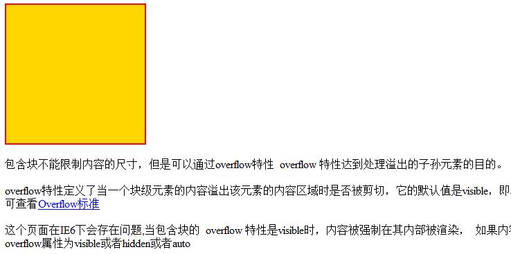

包含块不能限制内容的尺寸，但是可以通过overflow特性 overflow 特性达到处理溢出的子孙元素的目的。
overflow特性定义了当一个块级元素的内容溢出该元素的内容区域时是否被剪切，它的默认值是visible，即不进行剪切， 这可能导致该元素的内容在该元素的content box外被渲染,可查看Overflow标准
这个页面在IE6下会存在问题,当包含块的 overflow 特性是visible时，内容被强制在其内部被渲染， 如果内容尺寸过大，包含块的尺寸将也被内容撑大,解决方案是设置DIV A的overflow属性为visible或者hidden或者auto
注意： 正因为IE6下将父容器的大小撑大了，所以下面开始的文字是从200px之后开始的，别的浏览器下文字是以a容器的的下边开始的，与b容器没有关系。 但如果将a和b设置为display:inline-block，则文字就从200px的位置开始了，这是为什么呢？BFC?
(我是个图片哦)IE6下的表现如下: 